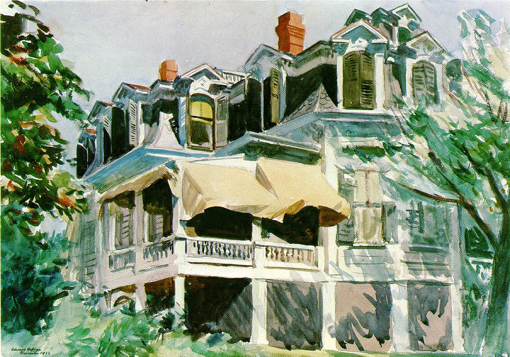
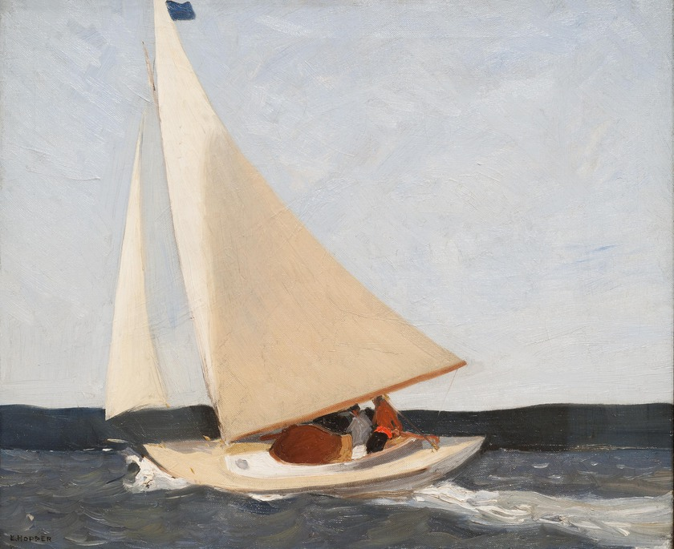

Edward Hopper
Edward Hopper (1882 - 1967) oli 20. sajandi alguse Ameerika kujutava kunsti realistliku suuna esindaja. Hopper andis oma teostes edasi nägemust kaasaegsest Ameerika elust. Edward Hopperi unikaalsus seisneb tema värvi- ja vormikasutuses ja urbanistliku ühiskonna mõju indiviidile edasiandmises.
Öösorrid

Edward Hopper maalis kõige enam maju ja valgust, kuid tema teoste hulgas leidub ka taieseid, millel on kujutatud inimesi. Üks Hopperi kuulsamaid teoseid on "Nighthawks", eesti keeles "Öösorrid", kus on kujutatud lihtsat, suhteliselt tühja kohvikut, mis on avatud ööpäevaringselt, mahajäetud tänaval. Maali on nimetatud "urbanistliku võõrandumise võimsaks kirjelduseks". Maalil torkab silma erksas punases kleidis naisterahvas, kes on üks kohvikus viibijatest. Ülejäänud kohvikus olevad inimesed on meesterahvad, kes jäävad naise kõrval väga neutraalseks. Tegelased "näivad olevat suletud klaaskasti, millest puudub väljapääs".
Mansardkatus
1923. aasta "Mansardkatus" on Hopperi üks esimesi teoseid, kus ta maalib arhitektuuri akvarellidega. Esialgu kasutas Edward Hopper akvarelle vaid illustratsioonide tegemiseks, kuid tulevase abikaasa õhutusel hakkas ta kasutama akvarelle ka merevaateid ja ehitisi kujutavatel maalidel. "Mansardkatuse" maalil pole veel täielikult välja kujunenud Hopperile omast stiili, kuid selle algeid on juba märgata. Maalil on Hopper jäädvustanud koha üksindust.
Sailing
Edward Hopper töötas üle 15 aasta reklaamifirmas illustraatorina. 1913. aastal müüs ta esimese akvarelli "Sailing", hinnaga 250 USA dollarit. Seejärel kulus veel kümme aastat, enne kui ta järgmise maali müüs. Aastal 1918 võitis Hopper esimese konkursi postriga "Smash the Hun". Selle teosega pälvis ta rohkem tähelepanu kui ühegi enda maaliga ja kogus tuntust illustraatorina.
Hommik Cape Codil

Jo Hopper:"See on naine, kes vaatab õue, et näha kas ilm on piisavalt hea pesu kuivatamiseks." Hopperi muusaks ja modelliks läbi elu oli tema abikaasa.